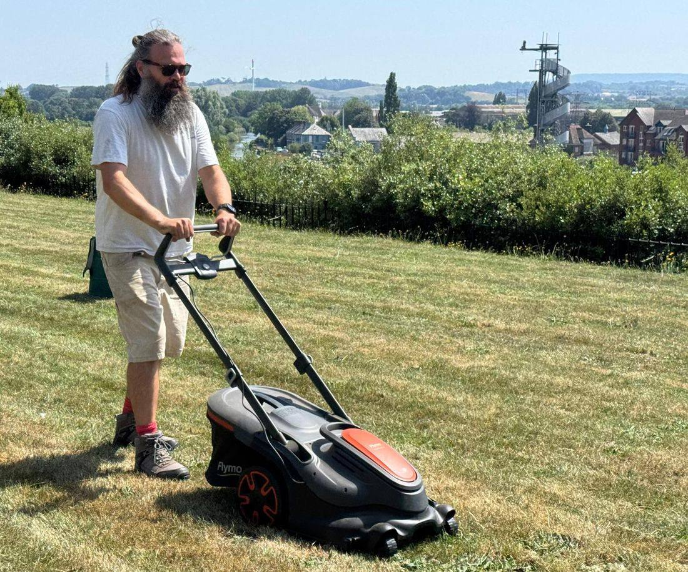

Home and garden technology journalist, Exeter
If it plugs in or runs on a battery, I'll find out if it's worth the money.
I'm Harry Duncton. I test home and garden technology, from cordless tools to smart home kit, for BBC Gardeners' World Magazine, T3, Trusted Reviews and Grand Designs Magazine. Robot lawnmowers are my specialism: I've tested dozens, and BBC Radio 4's Sliced Bread had me on as its expert.
- BBC Gardeners' World Magazine
- T3
- Trusted Reviews
- Grand Designs Magazine
- BBC Radio 4
Reviews, buying guides and features
- T3What an England Rugby groundsman and a robot lawn mower have in commonFrom Allianz Stadium, on the robot mowers Stiga is sending to grassroots rugby clubs.
- BBC Gardeners' World MagazineThe best robot lawn mowers, as tested by our expertsThe magazine's robot mower guide, from budget models under £400 upwards.
- Royal Forestry SocietyExcellence in Forestry Awards 2026: five profiles of the winnersFive commissioned profiles, a long way from the lawn.
- T3Webb 40V self-propelled lawnmower review
- T3Husqvarna Automower 308V review
- Trusted Reviewseufy C15 robot lawnmower review
- BBC Radio 4, Sliced BreadRobotic lawnmowers: do they save time without hassling hedgehogs?
- BBC Gardeners' World MagazineThe 12 best cordless lawn mowers, tested and rated
- Trusted ReviewsSTIHL FSA 50 cordless grass trimmer review
- Trusted ReviewsHusqvarna 122iB leaf blower review
- BBC Gardeners' World MagazineThe best leaf blowers, as tested by our expert reviewers
- BBC Gardeners' World MagazineThe best hedge trimmers, tested in real-world conditions
- BBC Gardeners' World MagazineThe best lawn scarifiers to buy
- BBC Gardeners' World MagazineThe best grass trimmers
- BBC Gardeners' World MagazineThe best lawn mowers, tested and rated
- BBC Gardeners' World MagazineThe best pressure washers, as actually tested
- BBC Gardeners' World MagazineThe best garden shredders
- BBC Gardeners' World MagazineThe best cordless drills
- BBC Gardeners' World MagazineThe best electric screwdrivers
- BBC Gardeners' World MagazineThe best rotary and oscillating multi-tools
- BBC Gardeners' World MagazineFlymo EasiLife Go 500 robotic mower review
More in my author archives at T3 and BBC Gardeners' World.
On air: BBC Radio 4, Sliced Bread
Do robot mowers save time, and what happens to the hedgehogs?
Sliced Bread put that question to me as their robot mower expert, alongside hedgehog researcher Dr Sophie Lund-Rasmussen. I cover what the adverts don't: edges, borders, slopes and wildlife.
Need a voice on robot mowers or home and garden tech? I'm available for comment and interviews.
Newsletter
Beard In The Wild
Garden tool reviews, how-tos and home technology advice, in your inbox every other week.
For brands
I test home and garden tech for a living. I know what yours needs to say.
Whether it's a robot mower, a cordless tool, a power station or anything else for the home and garden, I can help you say it clearly to UK buyers, and tell you honestly how it will land with the press.
-
Copywriting
Product pages, launch copy, guides and manuals in plain British English, written by someone who has mown a real lawn with the thing.
-
Press and pitch consultancy
Honest feedback on your product and your pitch before either reaches an editor, and help finding the story in them. I don't promise coverage.
Bringing a robot mower to the UK? See the UK Launch Playbook.
-
Video and social
Partnership content on Beard Reviews Tech across YouTube and Instagram, always clearly labelled.
-
Expert commentary
Comment for print, radio, podcasts, panels and events on robot mowers and wider home and garden tech.
How I work with brands
I review products for magazines and websites, and I also write for brands. Those two jobs stay apart, which is what makes my name worth having on your launch.
If a brand pays me for copy, consultancy or anything else, I don't review, rate or recommend its products in any publication while we work together, or for 12 months afterwards. The editors I write for know which brands I work with.
Review samples arrive on loan and nobody sees a review before it's published. Brands sometimes cover my travel to launches and trade shows. When they do, I say so in what I write, and it buys no coverage.
Paid content on Beard Reviews Tech is always labelled as paid. If it isn't labelled, nobody paid for it.
About
The spec sheet tells you what it does on a good day.
I tell you what it's like on a real one, when wind, rain and drought get in the way.
My job is to find the next useful piece of home and garden tech, test it properly and write about it in a way people want to read. Robot lawnmowers are my specialism. Over the past few years I've tested dozens of them on a sloping estuary garden full of roots and salt air, plus a couple of friends' lawns that would defeat most mowers. None of these lawns is as forgiving as a manufacturer's demo lawn.
The best home and garden tech gives you your time back, so I'll tell you if it takes a degree in computer science to get it working. I don't have one either.
I came to journalism the long way round: testing computer games, teaching English as a foreign language, managing content, and felling larch in Scotland. That mix is why I can take a 40-page technical manual and turn it into 500 words a reader might enjoy, and why my work isn't only about robots. This year the Royal Forestry Society commissioned me to profile the winners of its Excellence in Forestry Awards.
Editors come back because I know the products and the industry well enough to explain what matters to a reader, and I file clean copy to brief and on time. I'm also the person people text before they spend a grand on a robot mower.
Get in touch
One inbox for commissions, brand projects and interview requests.